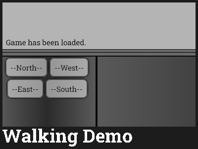

Walking Demo
By AgentRylie
Released on 8/27/2020
Demonstration of top-down walking abilities in IGM.
Game Link - https://orteil.dashnet.org/igm/?g=Z33umfK7
Related Games
Get a Glass of Milk Because You Have To (Built Upon This)
Game Details
Walking Demo is a demonstration of the possibly of top-down walking in IGM. It was originally made to fix the bugs associated with it, and was only posted in DashNet.
As previously said, it was meant to fix some bugs, notably display issues and south/west not showing buildings. Around the same time, Rylie was working on Idle Rising RPG which would of featured it. It took 4 months for the latter issue to be fixed, in which, a work around as done with the "." button. Later, this was fixed properly in another game, in which it was ported back here.
Get a Glass of Milk Because You Have To, also from Rylie, uses this to allow the player to explore Lint Yard, which was released a year after the release of Walking Demo on August 24, 2021. Idle Rising RPG would also release, albeit unfinished, with an older version of the walking. These are currently the only documented games to feature it.
A extremely ambitious and cancelled game, Wizards and Dragons, was planned to feature it for its world of shops, villages, kindgoms, and wild, but this aspect was never released. It would of been the only game not developed by Rylie to feature it or a recreation.
